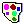
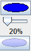

Colores y transparencia.
Una paleta de 14 colores de base está disponible a la derecha de la ventana del programa.
Bajo esa paleta figura un botón ovalado que permite una elección personalizada para el color activo .
El color de ese botón refleja reflète el color activo para los nuevos objetos creados.
Es también el color que se dará a un objeto gráfico cuando se cliquea éste con la herramienta .
Desde la versión 2.0, MathGraph32 puede utilizar efectos de transparencia para el relleno de las superficies.
El coeficiente de opacidad se determina desplazando el cursor que figura bajo el botón oval de elección de color 
Este coeficiente se memoriza en la figura cuando se lo registra.
Un segundo botón muestra cuál será el verdadero color visualizado (sobre un fondo blanco).
Este efecto de transparencia sólo se utiliza para la elección de relleno pleno con transparencia en la paleta de estilo de relleno.
La elección de relleno plena sin efecto de transparencia está simbolizada por .
Los otros estilos de relleno con trazos no utilizan efecto de transparencia.
Cuando las figuras creadas antes de la versión 2.0 se cargan, el coeficiente de opacidad que se les asigna es de 1. Así se visualizan como en las versiones anteriores. Este coeficiente puede modificarse.
Copyright © <2009>, <Yves Biton>
Created with the Freeware Edition of HelpNDoc: Easily create Web Help sites